Every image below is a real render of the running app at 390×844, captured with Playwright. These are not comps: what you see is what ships. Left is the build before this pass, right is after.
The hero was a large copper figure with no word saying what it measured. It was total spent,
while every row beneath it discussed money remaining, so a user could not tell a good month
from a disaster at a glance. It now leads with what people actually open the app to find out, and
flips to Over budget by in red when the month has gone wrong. The buffer line no longer
renders the malformed S$-999776.89 left.
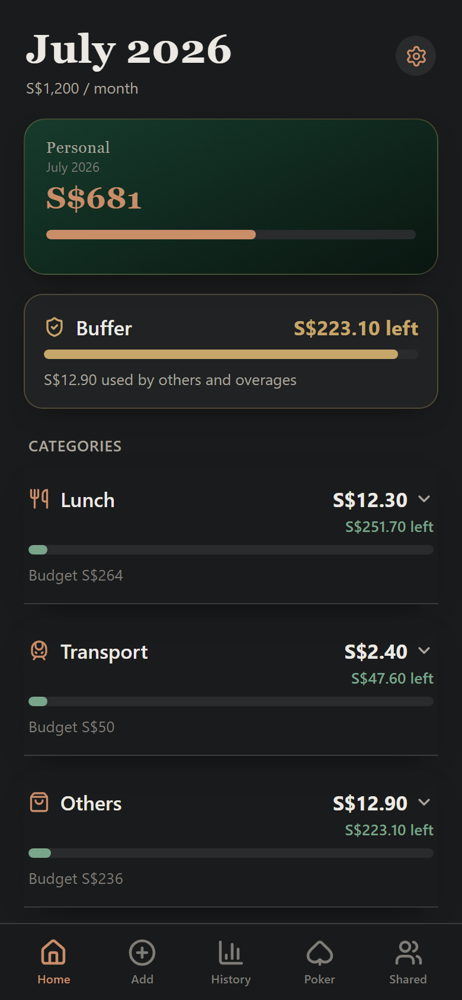
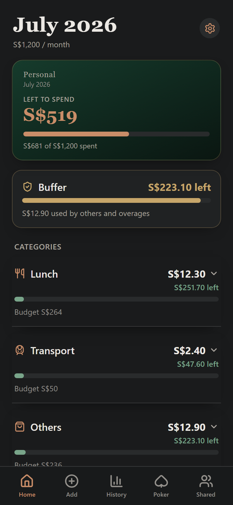
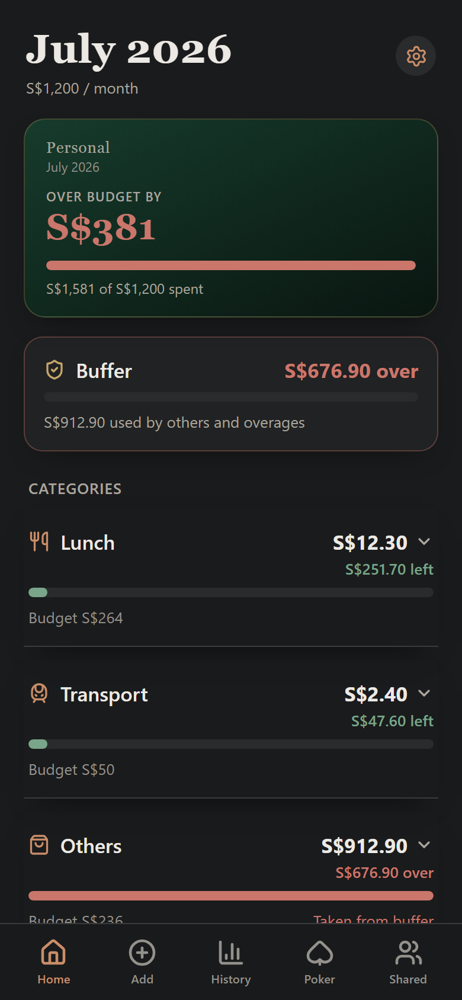
EntriesContext.tsx had three bare catch {} blocks. Entries were never lost (the sync queue is durable), but a failed drain was completely invisible. You tapped Save, the app
navigated home confidently, and the server might never have received it. The banner is amber rather
than red because the data genuinely is safe; it distinguishes unsynced writes from a plain
offline read.
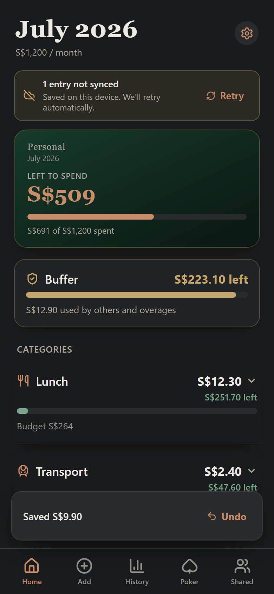
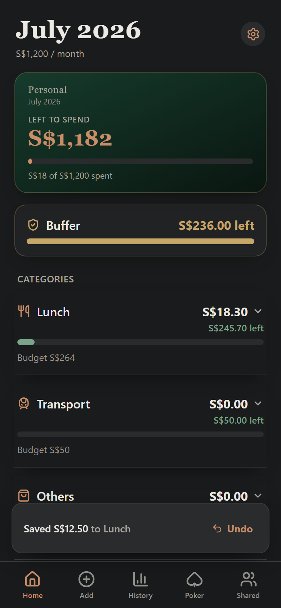
/api/** blackholed, saving S$9.90 now surfaces
“1 entry not synced” and the entry still counts. Tapping Undo on the toast reverts
the entry for real (Lunch went S$18.30 → S$5.80).Tapping History opened a calendar heatmap followed by an “Add missed expense” form: a second entry form using a plain text field where Add Entry uses a numpad. The transaction list, the thing the tab's name promises, sat roughly 1,600px down the scroll. The list now leads. The calendar, backfill form and analytics moved into a disclosure beneath it, so nothing was removed.
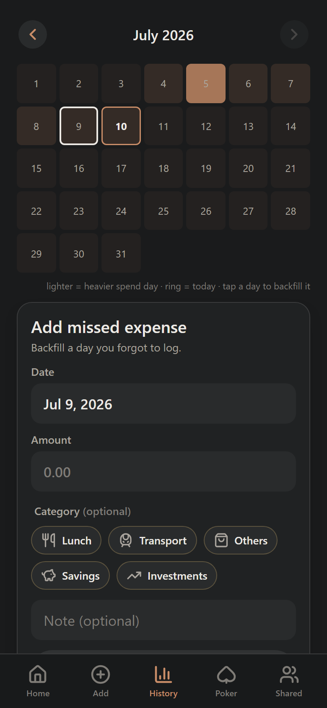
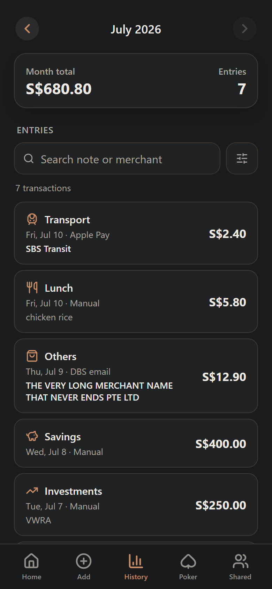
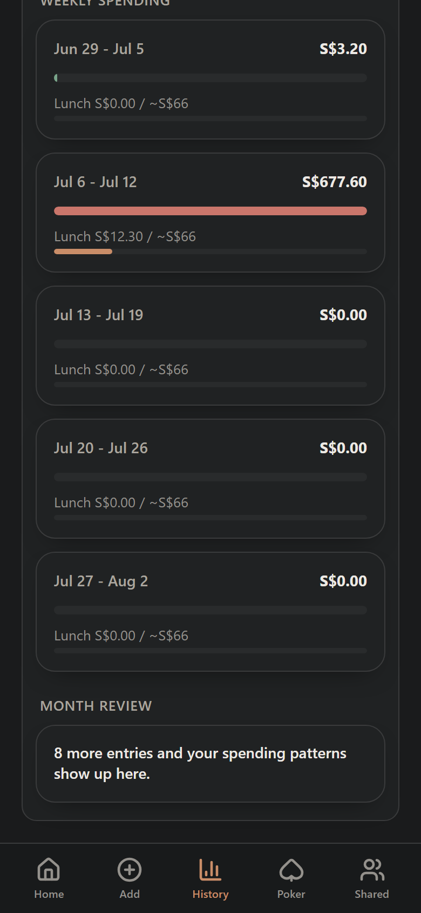
Save Budgets sat mid-scroll, was not sticky, and had no dirty-state indicator: edit a budget,
scroll to check another, navigate away, and the change was gone without a word. Meanwhile four large theme
cards occupied the entire first viewport, above Income and Monthly Budgets. The API token was a raw,
unstyled browser input next to a default grey button.
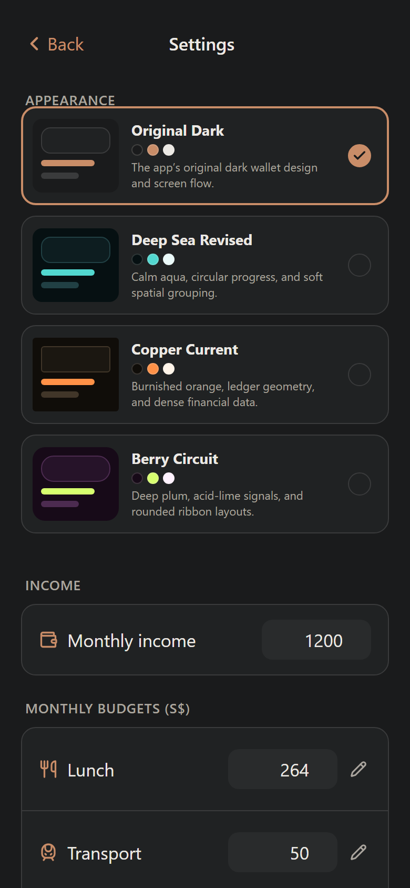
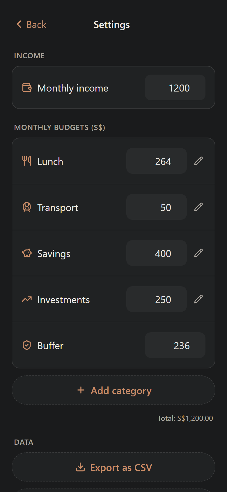
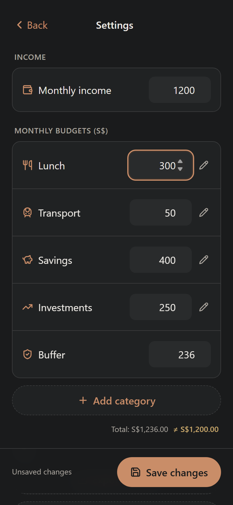
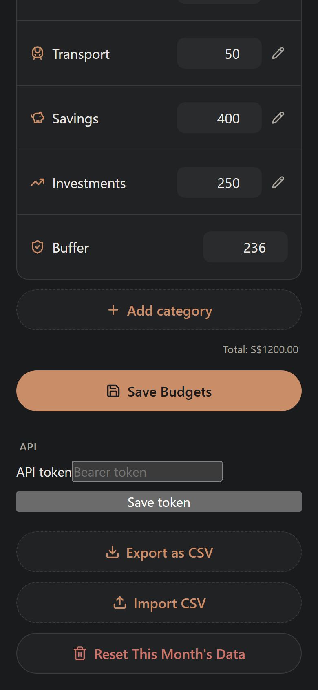
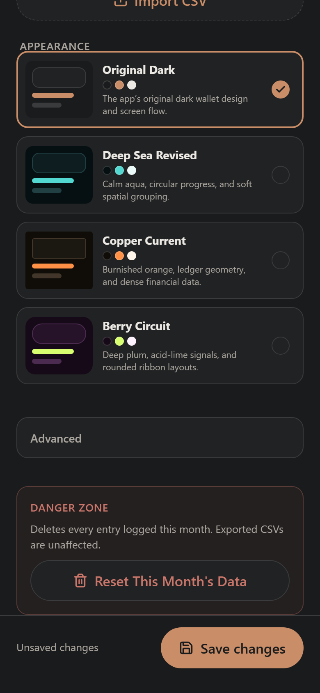
Reset This Month’s Data was previously
the same pill as Import CSV, distinguished only by red text. It now lives in a bounded region
that says what it deletes.
On original-dark the note input sat flush against Save at a 0px gap. The other three
themes had spacing rules this one never got, and margin-top: auto was a no-op because the
parent was not a flex column. The disabled Save button rendered at roughly 2:1 contrast. A new user's
first screen was five rows of S$0.00 with no way forward.
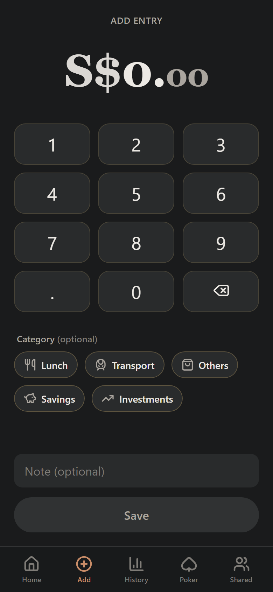
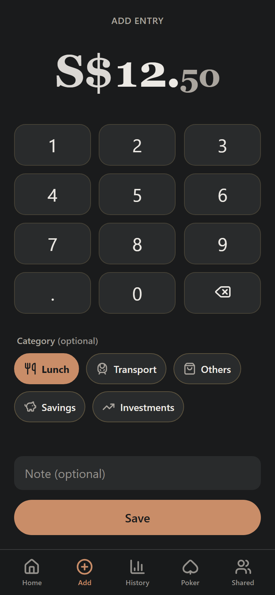
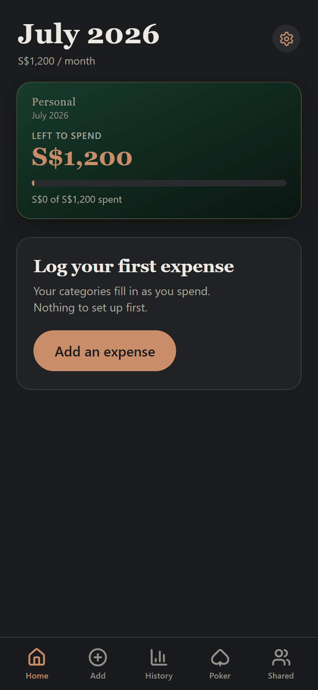
Spacing is driven by clamp() on vh, so the screen opens up on a tall phone and
compresses before it would ever push Save under the fold. Measured on four devices:
| Device | Note → Save | Key height | Overflow | Save below fold |
|---|---|---|---|---|
| iPhone SE — 375×667 | 0px → 11px | 47px | 51px → 0 | yes → no |
| iPhone 13 mini — 375×812 | 0px → 14px | 57px | 0 | no |
| iPhone 14 — 390×844 | 0px → 14px | 59px | 0 | no |
| iPhone Pro Max — 430×932 | 0px → 14px | 64px | 0 | no |
Contrast and touch targets were measured with a computed-style probe over the live DOM, then re-measured
after the fixes. Hit areas were confirmed with elementFromPoint rather than bounding boxes,
because the small controls grow their tap region with a pseudo-element and keep their visual size.
| Issue | Before | After | Fix |
|---|---|---|---|
.muted body text |
3.84–4.15:1 | 4.53–5.49:1 | --carbon-text-tertiary #7f7c77 → #94918c |
| Tab-bar labels | 4.2:1 | 5.56:1 | same token |
| Disabled Save button | ~2:1 | 5.6:1 | flat surface instead of opacity: 0.28 |
| Settings gear · month nav | 34×34 | 44×44 tap | ::before hit area, visual size kept |
| Category edit pencil | 24×24 | 44×44 tap | ::before hit area |
| Category chips | 38px / 34px | 44px | min-height |
| Calendar cells | 43×43 | 44×44 | min-height floor |
| Category rows | div[role=button] |
<button> |
native semantics & keyboard |
| Note inputs | placeholder only | named | aria-label |
aria-label and text content but never <label for>.
Re-checked properly: every budget input was already correctly labelled. The only genuinely unnamed inputs
were the two .note-input fields, now fixed.
46 call sites wrote S$${'{'}value.toFixed(2){'}'} by hand against 2 that used
toLocaleString, which is why the hero printed S$1,000,681 while the row beneath
printed S$1000012.89. All rendered money now routes through one src/format.ts
helper, covered by 11 tests.
| Case | Before | After |
|---|---|---|
| Thousands | S$1000012.89 | S$1,000,012.89 |
| Negative budget | S$-999776.89 left | S$999,776.89 over |
| Poker P&L at zero | +S$0.00 (green) | S$0.00 (unsigned) |
| Month review | Others led the month | Peak day Jul 6 | You spent most on Others. Biggest day: Sat, Jul 6. |
| Insights on 7 entries | “Mostly Wednesdays” | suppressed below 15 entries |